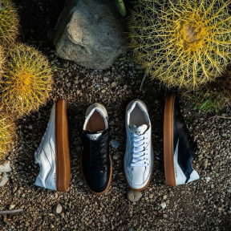
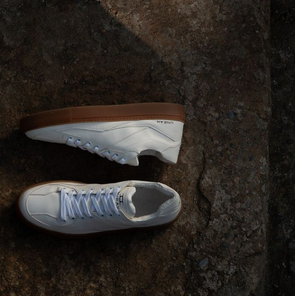

We realize quite well that shoes are one of the most consumed
products within the industry of fashion, which means volumes can be
important, which is a big social responsibility.
Juarez is the name of the first sustainable sneaker shoes model from
UNEAK, a new italian sustainable fashion brand, born from the ideas of
Sonia and Davide.

It’s produced completely in Italy, in a warm region where all workers
live very close to the production site.